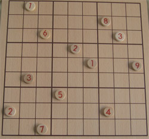
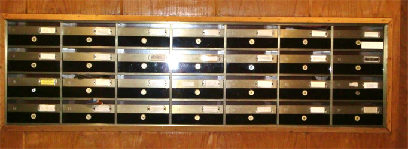

 |
¿Eres aficionado a los pasatiempos? Quizás tú no, pero al menos alguien cercano a ti seguro que sí: un familiar, una amiga, un compañero de trabajo, tiene la costumbre de resolver pasatiempos: en la playa, en un aeropuerto, en la consulta de un médico, en el metro,.. Un pasatiempo por todos conocidos es el sudoku, y probablemente sabes de qué va. Hay que colocar las cifras del 1 al 9 en cada fila, en cada columna y en cada cuadrado de 3x3, de forma que no se repita ningún número ni por filas, ni por columnas ni por cuadrículas 3x3. Básicamente estamos hablando de números perfectamente situados. Es decir, no es lo mismo que coloques un 3 en la primera fila y en la cuarta columna que lo hagas en la quinta. La posición de cada uno importa. |
El tener elementos ordenados en filas y columnas es muy corriente en nuestro alrededor. Veamos un ejemplo.
|
Seguramente una de las primeras cosas que hagas al llegar al mediodía o por la tarde a casa es mirar el buzón a ver si te ha llegado correo. ¿Pero te has parado a pensar como están distribuidos los buzones? Lo usual es que cada buzón lleve el nombre del inquilino, pero lo que lo caracteriza son dos valores: la planta en la que está y el número de piso en esa planta, aunque a veces se distingue por una letra. Es decir, todos los buzones están perfectamente determinados por dos valores que lo ubican perfectamente en la distribución del edificio. Algo parecido vamos a ver en este apartado, valores colocados ordenados según dos parámetros. |
 |